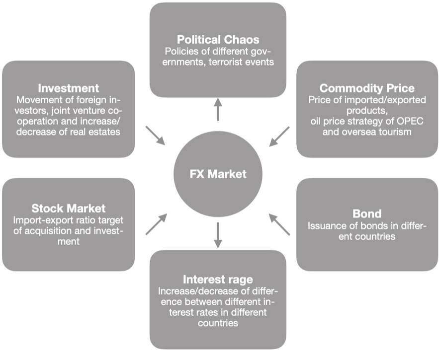

Your trusted partner for custody services
As custodian, we are the legal owner of, or hold security over assets and financial instruments on behalf of our clients. Through Mars Cap custody platform powered by our proprietary technologies, we enable our clients to focus on what they do best, assured in the knowledge we’re focused on what we do best.
Asset classes we can hold on your behalf
- Capital Preservation
The return (coupon rate) of Fixed Income Instruments, or coupon accumulated is generally higher than the term deposits. This means bonds are appealing to investors who want to save to fulfil future liability, such as saving for children’s education and to those who do not want to invest in the risky asset. On the other hands, investment in equity has more risk of losing the capital. - Income
Most bonds provide the certain ‘fixed’ level of income on a schedule to investors, such as quarterly, semi-annually or annually. Bond issuers decide the income rate will depend on inflation or set in fixed before the bonds reach maturity date. Compared to equity investment, fixed income investments pay a predictable income amount. - Diversification
Unlike equity, bonds have more stable income streams, and equity and bond market returns sometimes have an inverse relationship, i.e. bonds tend to rise in value when equities fall. Consequently, bonds in a portfolio significant diversify investment and reduce risk. Generally, 'put in all the eggs in a basket' is very risky. - Capital Appreciation
There is the opportunity that bond prices rise, including a reduction in interest rates and an improvement in the credit rating of issuer from (S&P, Moody’s and Fitch Group). A well-managed, high-quality bond portfolio can appreciate over time with total return delivered from both income and capital appreciation, which at times exceed equity market returns with significantly less risk.
Fixed Income
What is Fixed Income Instruments
Corporate bonds are generally offering higher returns than government bonds because they are considered to be the higher risk. However, corporate bonds are in the top pyramid to other types of investment types. This means if the company is having financial difficulty, the holders of corporate bonds would generally have priority to claim their capital back before other debts and shareholders.
Benefits of Fixed Income Instruments
Fixed Income Instruments have essential roles in a portfolio that outperformed other instruments, it includes:
Asset Management
Mars Cap understand the experience and professional is crucial in delivering risk management services over the terms of investment. With our professional skills across both investments and operations, we are well equipped, and making a predictable move with you onboard, navigating the direction to accumulating fortunes, leading you to a comfortable retirement.
The goal of Mars Cap Limited is providing our clients’ a real haven with an illuminating light on, where wealth is safeguarded, and you would not feel alarmed.
We specialise in fixed income assets with funds under management for five years with the return speaks for itself. Our investment committee has close to 75 years of investment experience, during which they groped for solutions and overcome several financial crises.
If you are not a risk-taker and aim to steady return that beats the industry benchmarks without the risk associated with equity or property markets, then the allocation of fixed income assets will help you fulfil your need. Mars Cap Limited currently offers an investment opportunity in Fixed Income via Ayers Alliance Wholesale Enhanced Income Fund No.1 for clients.
The one place for all of your investments
Mars Cap is not a product issuer, so we can focus on connecting you and your adviser to a broad range of investment solutions for your investment needs.
You and your adviser can select the investment options you need from a broad investment menu that includes managed funds, equities, term deposits and OTC products including derivatives.
FX & CFD Trading
Mars Cap Limited does not hold a derivative issuer licence issued by the New Zealand Financial Markets Authority (FMA).
Disclaimer : Mars Cap does not offer financial products to, or accept applications from, New Zealand retail investors. ‘Retail investors’ are persons who are not a ‘wholesale investor’ in relation to the offer or service for the purposes of the Financial Markets Conduct Act 2013.
FX Trading
What is FX Trading
Foreign exchange, Forex or FX for short, is a professional operation converted the currency of one country to another to discharge international debtor-creditor relationship. This market has an average turnover of over USD3 trillion per day by gaining more and more attention in recent years and has developed into the world’s largest financial market, which is several times of the trading volume of the global stock market. The market never stops trading except on Saturdays, Sundays or major holidays, because of the time difference and different geographical positions of global financial centres (from Sydney to Tokyo, London and New York, the Asian, European and American markets), and is running 24-hour globally.
The foreign exchange market is trading via over the counter (OTC) where dealings can be done between buyers and sellers directly globally, while stock trading and futures trading, which are through centralized exchanges in a unified market. This FX is breaking through the limitation of space and time and is connected by a commonly accepted method and advanced information system.
- Inter-bank FX market, and are mostly large banks and broker, who are trading through quotation and free conclusion of business;
- Customer FX market and the main players are enterprise legal persons, institutional investors and hedge funds.
FX Market Participants includes
Factors Affecting FX Fluctuation
As shown in the Figure, many factors lead to FX fluctuation, mainly political and economic factors, even breaking news or a speech by some national personage is likely to cause FX fluctuation.
CFD Trading
What is CFD?
Contract For Difference or CFD for short means commodities, financial securities and derivative commodities will be settled by price difference from trading.
Even though CFD trading are not settled physically, but it has the same investment effects of holding the underlying assets. Investors profit/loss are reflected by the difference from buying/selling CFDs.
Also, CFD trading is over-the-counter trading between clients and the counterparty, means not the physical platform required. With CFD, clients can invest in various financial instruments such as commodities, stocks, stock indexes, bonds and all other fields. CFD trading adopts margin trading and short selling mechanism so that clients can make active trading with their funds in purposes. Moreover, clients can set a stop-loss price to limit risks.
Commodity CFD
Commodities CFD is the trading of Contract for Difference(CFD) based on the commodities like gold, silver and other material with no actual property of investment. It means investors can trade with liquidating only the difference of the price rather than physical assets.
"Commodity" has a wide range of investments, including gold, silver and other precious metals, copper and other non-ferrous minerals, crude oil and other energy as well as wheat, soybeans, corn and other crops.
Why Commodity CFD
The size of the transactions has been expanding every year, and it provides investors with more investment opportunity with their known products. These products have transaction widely in the commodity exchanges over the world. Moreover, commodities such as gold and crude oil are reported by the news frequently, and it easily establishes the investment strategy that suited you after understanding the variation factor of the price change.
Securities CFD
Securities CFD can be further divided into spot stock CFD, stock index CFD and securities index futures CFD. Our CFDs, all with stock index futures as underlying assets, are securities index futures CFD. Like futures trading on exchanges, securities index futures CFD trading also has an expiry date. Also, with no actual property of investment, you only trade with liquidating the difference in the price.
Why Securities CFD
When it comes to securities CFD, investors can make use of their limited funds to securities index in margin trading, or the short selling if the market will going downturn in a foreseen future. The wide range of trading strategies applied to securities CFD, which maximise the value of securities more effectively.